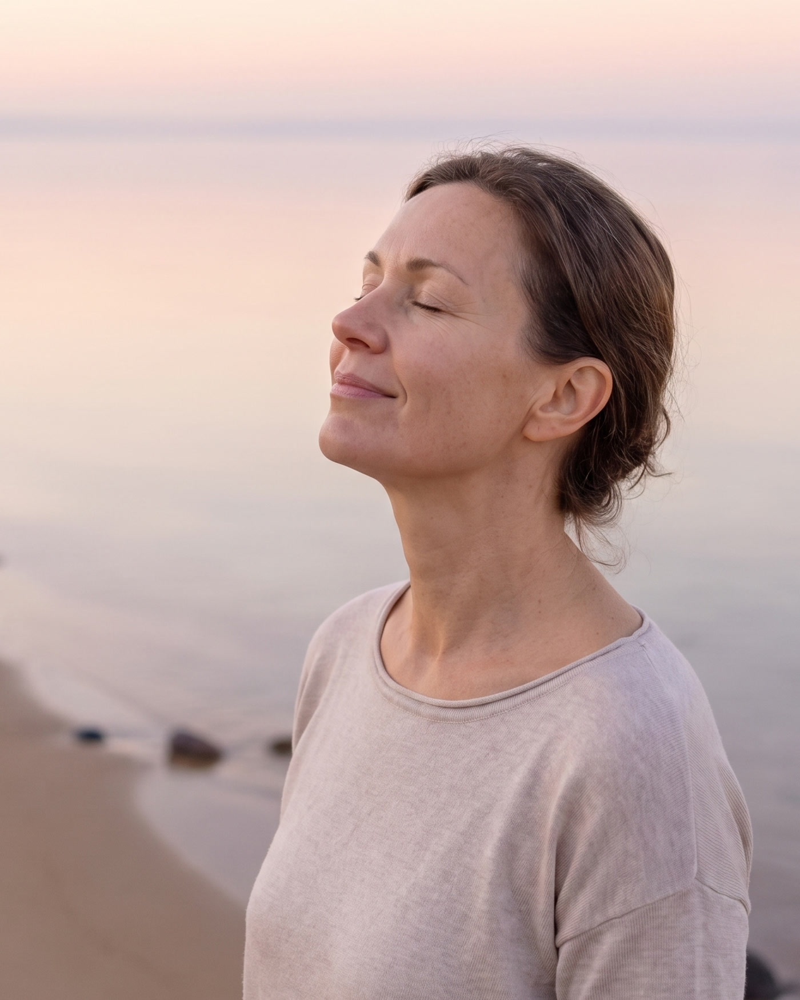
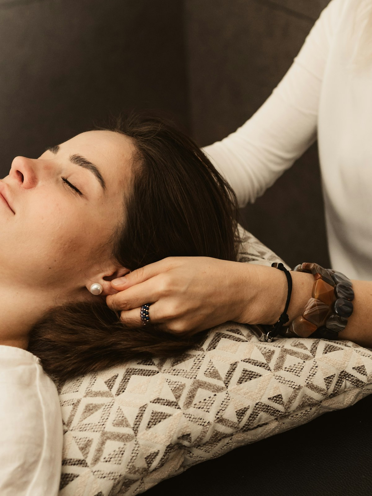
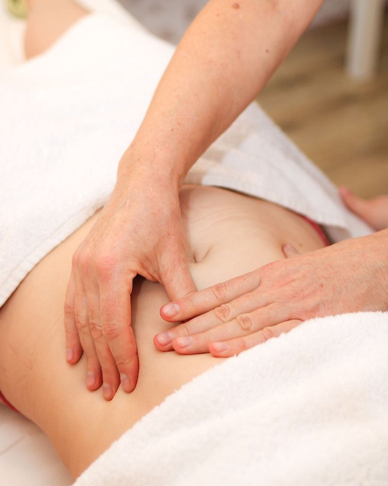

Less pain. More ease.
Gentle craniosacral therapy and lymphatic drainage for a softened nervous system and freer movement — by appointment in the South Bay.

Practices
Two gentle modalities. Tap a card to learn what it is, who it’s for, and how it may feel in your life.

Craniosacral Therapy
Light-touch work that helps the nervous system settle and the body soften.
What it is
A quiet, hands-on practice along the craniosacral system — the subtle rhythms of the head, spine, and sacrum. The touch is feather-light, inviting release rather than forcing it.
Why someone would need it
When stress, old holding patterns, or lingering tension keep the body braced. Many people come when rest alone isn’t quite enough to unwind.
How it can improve their life
Sessions often leave people feeling clearer, quieter inside, and freer in everyday movement — with a little more room to breathe through the day.
Who it’s for
Anyone drawn to gentler care: those navigating chronic tension, recovery from strain, or simply wanting a calmer nervous system without deep-pressure work.

Lymphatic Drainage
Gentle manual work to support lymph flow and a lighter, less congested feel.
What it is
Soft, rhythmic manual lymphatic drainage that encourages lymph to move with ease. The pressure stays light — more like a whisper on the tissue than a deep massage.
Why someone would need it
When the body feels heavy, puffy, or sluggish after travel, surgery recovery (with clearance), illness, or long stretches of sitting and stress.
How it can improve their life
Many people notice a lighter body, easier movement, and a refreshed sense of flow — support for recovery and everyday comfort, not a medical treatment claim.
Who it’s for
Those seeking gentle drainage support: post-procedure recovery when cleared by a provider, athletic reset, or anyone who simply wants to feel less congested in their own skin.
Ready when you are
Choose a time that works, or reach out if you don’t see one that fits.
South Bay / Wellness Den, Manhattan Beach · Confirm location line with Laura before launch.